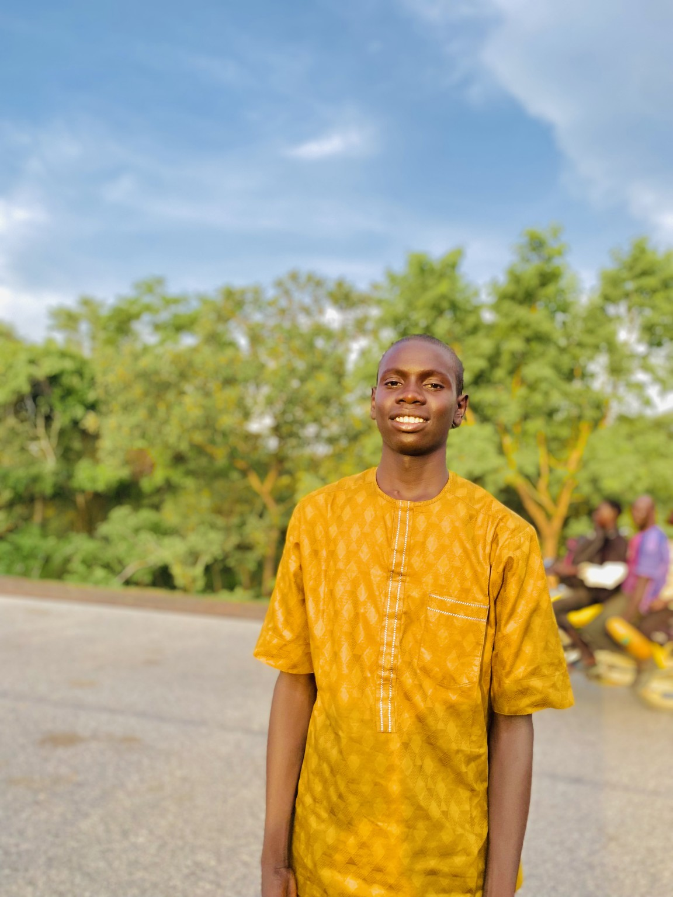

Abubakar Aliyu Abbaji
Adamawa State, Nigeria
Abubakar Aliyu Abbaji is a young Nigerian focused on learning, personal growth, building meaningful connections, and creating opportunities for his future.
Personal profile • Public information only